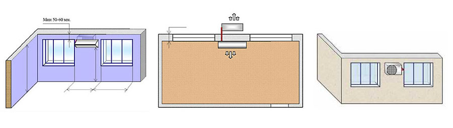
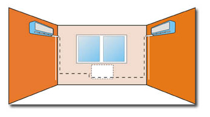
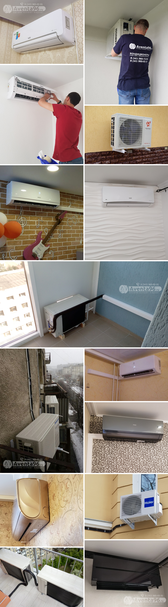

Установка кондиционеров
Внимание! Услуга сопутствующая! Установка кондиционеров осуществляется как нашей бригадой, так и подрядной организацией.
Как происходит:
- Оформление заказа на кондиционер на сайте;
- Оплата оборудования, после того, как его зарезервирует менеджер (самый быстрый способ - онлайн оплата на сайте);
- Согласование даты и интервала доставки и даты монтажа; (согласуем с Вами по указаной почте или телефону)
- Доставка оборудования службой доставки (документы на товар предоставит водитель);
- Монтаж оборудования монтажной службой;
- Оплата монтажа (договор и акт на работы предоставит монтажник).
Ближайшие даты на монтаж бытовых кондиционеров:
14 августа 2023 с 10-00; с 15-00.
15 августа 2023 с 10-00; с 15-00.
16 августа 2023 с 10-00; с 15-00.
Дата на монтаж бронируется после оформления заказа на сайте и оплаты оборудования. Резерв на кондиционеры и цена держится не более 1-го дня. Доставка кондиционеров осуществляется службой доставки, монтажники кондиционеры не привозят.
Физическим лицам: (с 10 июля 2023 г. Стоимость стандартного монтажа настенного кондиционера в Екатеринбурге):
- До 3.5 кВт - 8 290 руб + расходной материал. Стоимость со скидкой при оплате наличными. Оплата онлайн/юр. лица - 10 410 руб + расходной материал.
- До 7 кВт - 11 770 руб + расходной материал.
- До 12 кВт - 12 150 руб + расходной материал.
- Монтаж в 2 этапа + 1000 рублей.
- "Выезд на замеры" на бытовые монтажи НЕ осуществляется. Возможен расчет стоимости по видеозвонку непосредственно с монтажником или фотографиям.
Расходные материалы и доп. работы:
Межблочная трасса (в сборе):
- 805 руб./пог. метр (1/4+3/8 для моделей до 3.0 кВт и инверторов до 3.5 кВт);
- 865 руб./пог. метр (1/4+1/2 для моделей от 3.5 до 5.5 кВт);
- 1195 руб./пог. метр (3/8+5/8);
Кронштейны:
- 630 руб. - (450х415 для моделей до 3.5 кВт);
- 850 руб. - (500х500 для моделей до 5 кВт);
- от 1200 руб. - для более мощных моделей;
Питание:
- 85 руб./пог. метр кабель питания (если потребуется);
- 100 руб./шт. вилка (если потребуется);
Кабель каналы:
- от 350 руб./метр, 60×60 мм, под коммуникации (если потребуется);
- от 70 руб./метр, под кабель питания (если потребуется);
Доп работы:
- 300 руб./метр - прокладка трасс, свыше 5-ти метров, входящих в стоимость 7290 руб.;
- 1200 руб. - установка кронштейнов на утрепленный или вентилируемый фасад;
- 14 руб./км - в обе стороны, транспортные, от границы города.
- Снятие/установка стеклопакетов, разборка/сборка обшивок стен, перестановка мешающей мебели и прочие "пожелания" клиента, не входящие в перечень работ по установке кондиционера: по договоренности с монтажниками;
Все расходные материалы и документы привозятся монтажниками, стоимость материалов рассчитывается по фактически использованному количеству на Вашем объекте кратно 1 метру.
Стоимость работ для физических лиц указана из расчета:
- место установки наружного блока под окно/на балкон/лоджию на твердый фасад без применения автовышки или услуг альпиниста;
- работы по прокладке межблочной трассы не превышает 5 метров, с одним отверстием d40 через наружную стену;
- внутренний блок размещается не далее 0,5 метра от окна;
- дренаж выводится на улицу или емкость для удаления конденсата самотеком;
- без установки дренажного насоса;
- без штробления;
- электропитание от ближайшей розетки;
- без подвода электропитания от щитка;
- местонахождение объекта в черте г. Екатеринбурга
Оплата монтажа физическими лицами осуществляется по факту выполнения работ.
Приемка работ по монтажу заверяется Вашей подписью в акте выполненных работ. Претензии по качеству монтажа после подписания акта НЕ принимаются. Гарантийный срок на монтажные работы составляет 1 год с момента пуска оборудования в эксплуатацию.
Примеры монтажей:
Прямой монтаж: 10750 руб. (наличными); 14100 руб. (безнал/Юр. лица) (до 3,5 кВт):

Прямой монтаж кондиционера в Екатеринбурге подразумевает установку внутреннего и наружного блока напротив друг друга через стену на одной высоте без применения подъемных механизмов, сборки лесов, выпуском дренажа к наружному блоку и включает в себя:
- Трасса межблочная в сборе - 3 метра (допускается по технологии монтажа использование не менее 3-х метров. Излишки сворачиваются в "колач" за наружным блоком)
- Дренажная трубка - 2 метра.
- Вилка электрическая - 1 шт.
- Кронштейны под наружный блок - 1 пара (415×450 мм).
- Отверстие d40 через стену - 1 шт.
- Крепежные материалы - 1 комплект
- Работы по прокладке трасс, установка блоков и пусконаладка.
Только для первых этажей, или при установке наружного блока на балконе или лоджии. В других случаях необходимо привлечение автовышки или промышленных альпинистов.
Стандартный монтаж (под окно) до 3,5 кВт:

1 Вариант: трасса 4 метра, проложенная снаружи помещения, без использования кабель-канала, кронштейны на твердый фасад, наружный блок под окно, внутренний блок на боковой стене от окна; модели до 3.5 кВт, наличными: 12 310 руб. + питание (если потребуется удлинение кабеля).
2 Вариант: трасса 4 метра, проложенная внутри помещения, с использованием 3-х метров кабель-канала (60×60 мм), кронштейны на твердый фасад, наружный блок под окно, внутренний блок на боковой стене от окна; модели до 3.5 кВт, наличными: 13 360 руб. + питание (если потребуется удлинение кабеля).
Внимание! К назначенной дате установки кондиционера на Вашем объекте, помещение должно быть освобождено от мебели, для свободного доступа монтажников к месту установки блока.
- Использование услуг сторонних организаций (автовышка) оплачивается заказчиком отдельно в расчете ориентировочно от 1 400 руб./час, минимум 4 часа.
- Монтаж более мощного оборудования, а также монтаж для юридических лиц в Екатеринбурге и Свердловской области рассчитывается отдельно по планировкам с указанными размерами, предоставленными Заказчиком.
Некоторые примеры наших монтажей в Екатеринбурге (портфолио):
